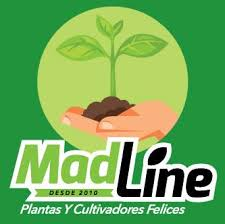

El creador de esta novedosa Pagina se llama Goyret Ignacio, Nacho como lo conocen sus amigos.

Sus empleados se consideran algunos de los mayores conocedores de la industria del pais, unos expertos en la materia de cada uno realmente

La calidad es todo lo que representa a BLS y a la gran familia que se ha ido conformando a lo largo de todos sus años de trayectoria.
